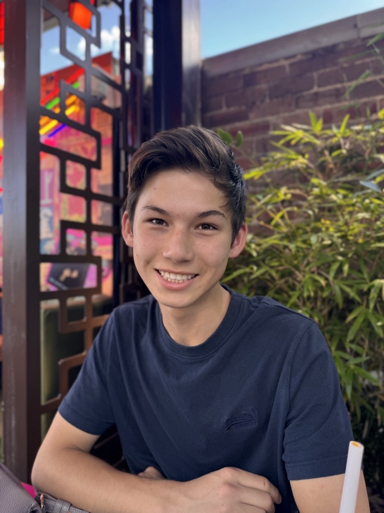
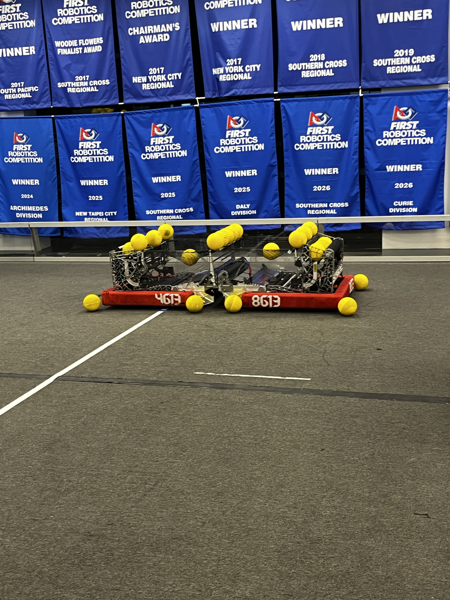
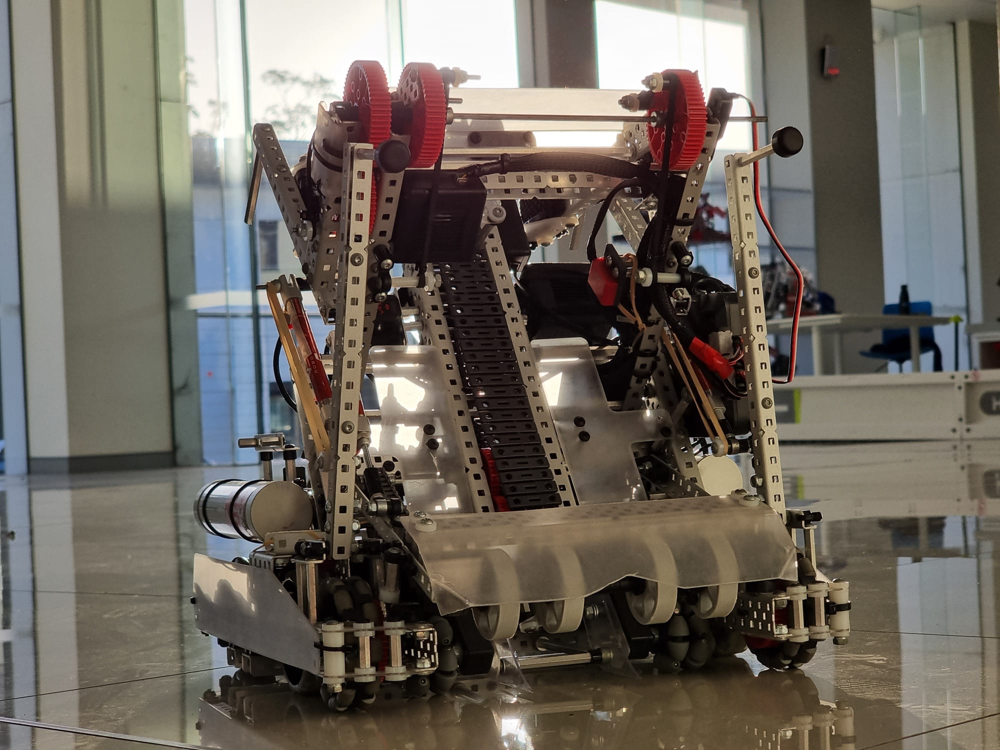
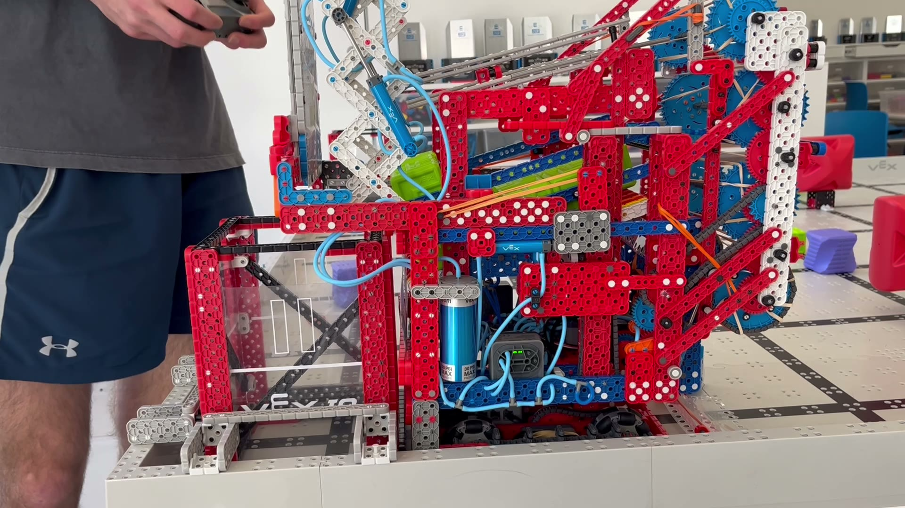
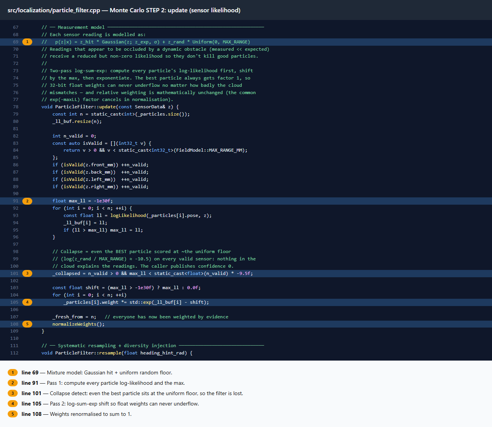
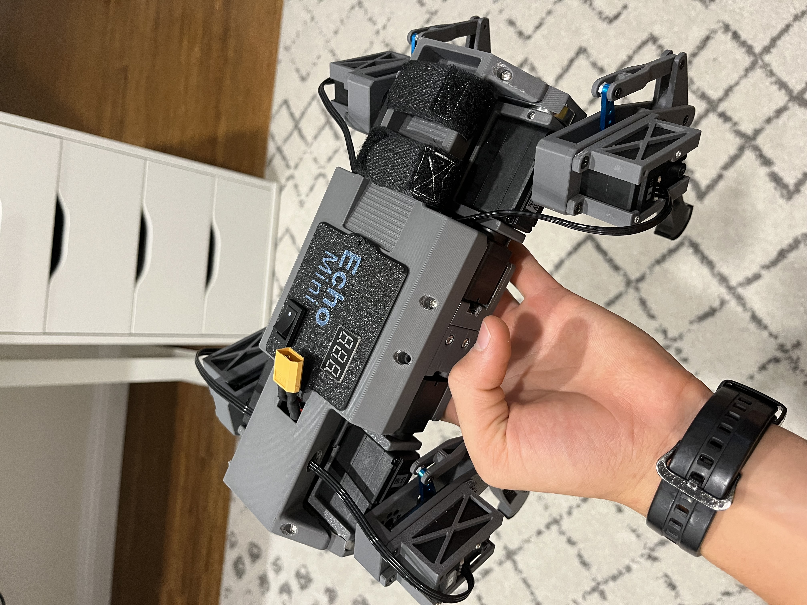
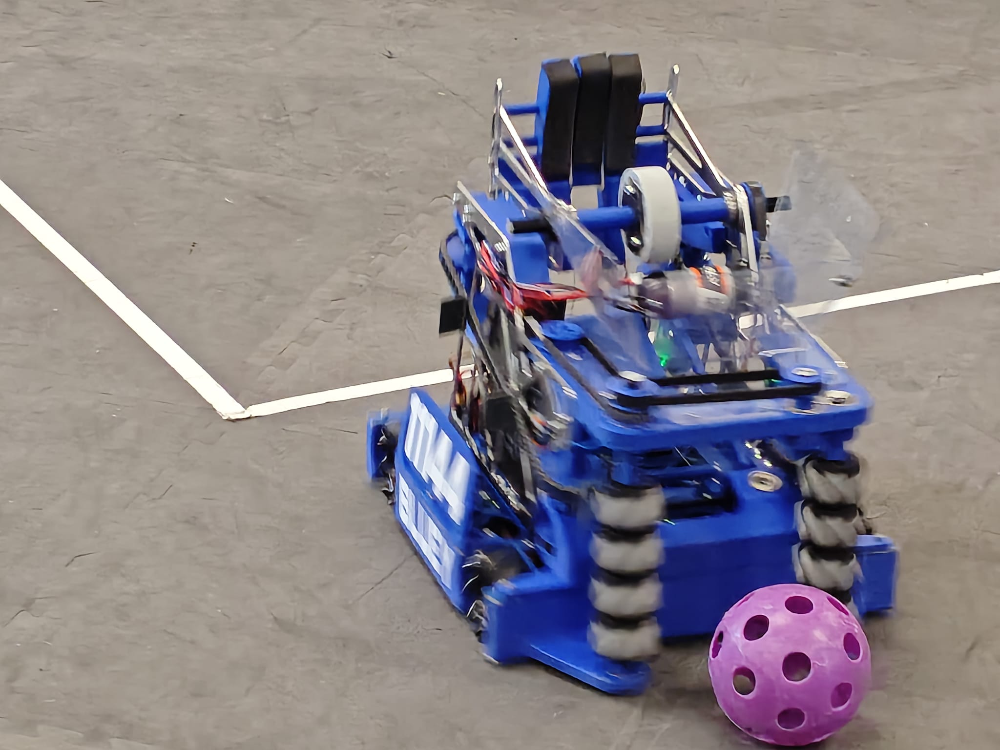
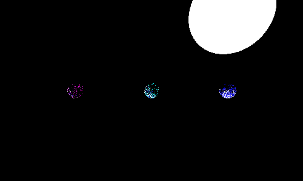

I design and build robots, and write down why.
Robotics student at Barker College, Sydney. Each project here shows the thinking behind the build: the options I weighed, what I tested, what failed, and what I changed because of it.

Work
Most important first. Each page walks through the design: the problem, the options, what failed, and what changed.
-

2025–26 REBUILT season FRC From VEX to FRC - competing with two Barker teams across regionals, Worlds, and Einstein. -

Team 4613B / 4613O VEX V5 Two seasons of VEX Robotics - from Nationals-winning Whisper to the powertrain-optimised Switch, plus a V5RC Middle School Nationals win.-

Team 4613B VEX IQ Full Volume season - a Barker League tournament win and a top-6.4% finish at the 2024 VEX Robotics World Championship. -

VEX autonomous software Redbacks localization A C++ library for team 4613B: odometry fused with distance sensors by a 200-particle Monte Carlo filter, plus a closed-loop motion controller.
-
-

Quadruped robot Mini Echo robot dog Three prototypes - from micro servos and AA batteries to inverse kinematics, mechanical linkages, and a fully integrated walking quadruped. -
 Sensing & kinematics
Mechanical hand motion capture
A low-cost potentiometer exoskeleton for sign-language interpretation - 15 channels of joint data reconstructed into a live 3D hand model.
Sensing & kinematics
Mechanical hand motion capture
A low-cost potentiometer exoskeleton for sign-language interpretation - 15 channels of joint data reconstructed into a live 3D hand model.
-
 Manipulation & vision
Vision-guided robot hand
A hand that finds an object's outline with YOLOE and places each finger against it - simulated in MuJoCo, built for the Amazing Hand.
Manipulation & vision
Vision-guided robot hand
A hand that finds an object's outline with YOLOE and places each finger against it - simulated in MuJoCo, built for the Amazing Hand.
-

Sydney North Qualifier 2025 FTC DECODE season - Innovate Award 1st place (Bluey, 11144) and Inspire Award 2nd place (18306).
Other projects
-
 Digital logic
Breadboard computer
A minimal-instruction-set computer designed in CircuitVerse and hand-built from six perfboard cards - CPU, program counter, memory, and a 555 timer clock.
Digital logic
Breadboard computer
A minimal-instruction-set computer designed in CircuitVerse and hand-built from six perfboard cards - CPU, program counter, memory, and a 555 timer clock.
-

Algorithms & simulation Python projects A path tracer, a NEAT network that learns Flappy Bird, an A* visualizer and more - built from scratch to understand how each algorithm works.
Profile
I started in VEX IQ with team 4613B, finishing in the top 6.4% at the 2024 VEX Robotics World Championship, then moved to VEX V5 and FRC with Barker's teams, competing at regionals, Worlds and Einstein.
Outside competition I build my own robots: a vision-guided robot hand, a walking quadruped, a motion-capture glove and a computer made from logic chips. I document builds on my YouTube channel, which has been featured on Hackaday and Hackster.io.
Contact
The code and design logs for most of these projects are public.